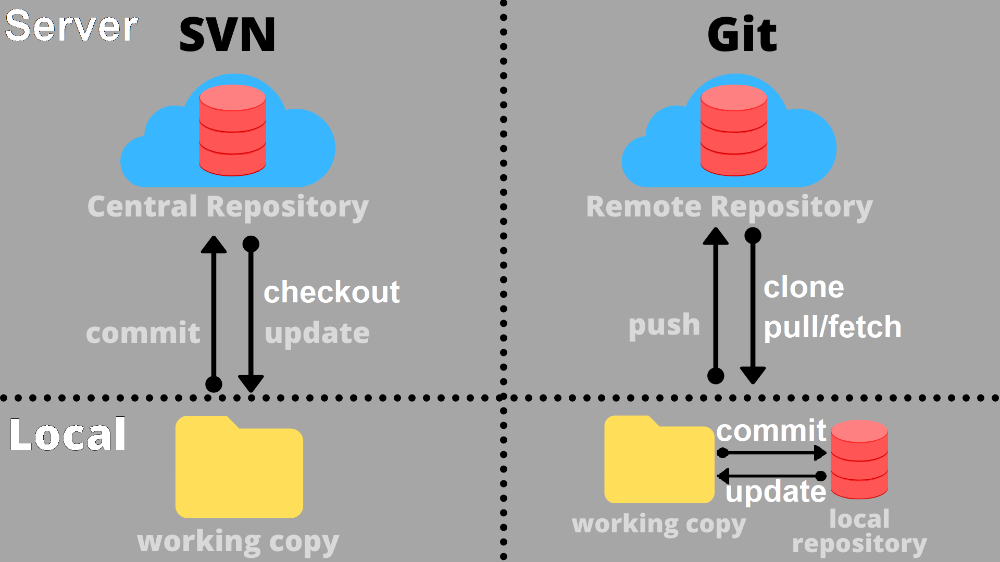

Git
SVN vs Git
SVN (Apache Subversion): centralized version control system
Git: distributed version control system

Git downloads new data from a remote repository
- git fetch: Git does not integrate new data into your working copy (Git updates .git directory)
- git pull (git fetch + git merge): Git integrates new data into your working copy
To update your local repository without losing your local changes, you can use the following commands to resolve merge conflict:
- git stash + git pull + git stash pop: temporarily save your work, update your local branch, restore your work
- git pull -X ours: Git uses your local file and ignore the remote version
SVN trunk is the same as Git master/main branch
GUI clients:
- SVN: TortoiseSVN
- Git: TortoiseGit, GitHub Desktop, Git GUI
TODO: Merge (SVN vs Git)